The following are the different steps to setup AdGuard on the Raspberry Pi device with the static IP address 192.168.1.5:
-
Install AdGuard on the Raspberry Pi device by executing the following command:
$ curl -sSL https://raw.githubusercontent.com/AdguardTeam/AdGuardHome/master/scripts/install.sh | sh
The following would be a typical output:
Output.1
starting AdGuard Home installation script 2026/01/17 12:04:32 [info] service: AdGuard Home, version v0.107.71 2026/01/17 12:04:32 [info] service: control action=install 2026/01/17 12:04:54 [info] service: started 2026/01/17 12:04:54 [info] service: line_num=1 line="Almost ready!" 2026/01/17 12:04:54 [info] service: line_num=2 line="AdGuard Home is successfully installed and will automatically start on boot." 2026/01/17 12:04:54 [info] service: line_num=3 line="There are a few more things that must be configured before you can use it." 2026/01/17 12:04:54 [info] service: line_num=4 line="Click on the link below and follow the Installation Wizard steps to finish setup." 2026/01/17 12:04:54 [info] service: line_num=5 line="AdGuard Home is now available at the following addresses:" 2026/01/17 12:04:54 [info] go to http://127.0.0.1:3000 2026/01/17 12:04:54 [info] go to http://[::1]:3000 2026/01/17 12:04:54 [info] go to http://192.168.1.5:3000 2026/01/17 12:04:54 [info] go to http://[fe80::1aa8:4390:7ecf:c67a%enxb827eb05329a]:3000 2026/01/17 12:04:54 [info] service: action has been done successfully action=install system=linux-systemd AdGuard Home is now installed and running you can control the service status with the following commands: sudo /opt/AdGuardHome/AdGuardHome -s start|stop|restart|status|install|uninstall
-
Create a command alias for AdGuard by executing the following command:
$ alias adguard='sudo /opt/AdGuardHome/AdGuardHome'
There will be no output.
-
To check the status for AdGuard, execute the following command:
$ adguard -s status
The following would be a typical output:
Output.2
2026/01/17 12:07:15 [info] service: AdGuard Home, version v0.107.71 2026/01/17 12:07:15 [info] service: control action=status 2026/01/17 12:07:16 [info] service: running 2026/01/17 12:07:16 [info] service: action has been done successfully action=status system=linux-systemd
-
Open a web browser to setup AdGuard by opening the link http://192.168.1.5:3000.
The following illustration shows the AdGuard welcome screen:
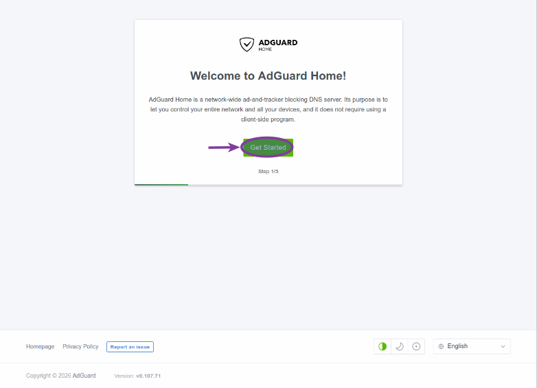Figure.1
To continue with the setup, click on the Get Started button.
-
The default values for the network interface as well as the DNS settings should be OK. Click on the Next button as shown in the following illustration:
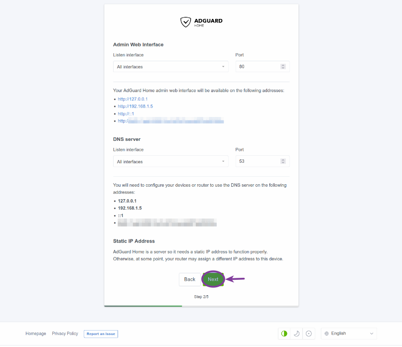Figure.2
-
The next step is to create an AdGuard user by entering the username, the password, and the password confirmation. After entering the values, click on the Next button as shown in the following illustration:
 Figure.3
Figure.3
We have chosen the username as adguard (with an associated password), which will be used when login into AdGuard in the future.
-
The next page provides brief instructions on how to configure the router to use AdGuard. Click on the Next button as shown in the following illustration:
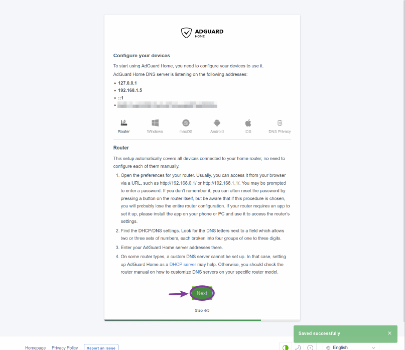Figure.4
-
At this point the basic setup of AdGuard is done. Click on the Open Dashboard button as shown in the following illustration:
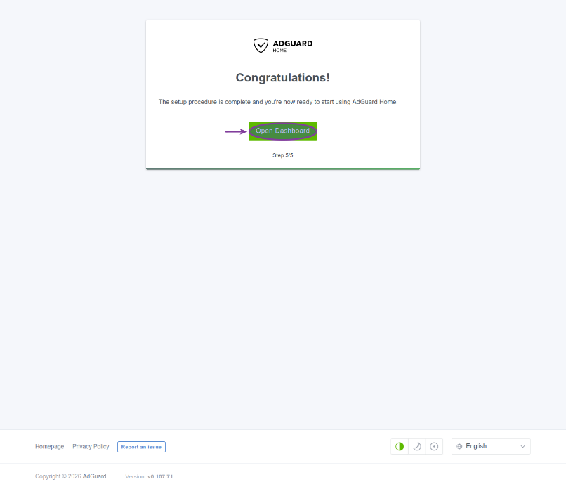Figure.5
-
This will take us to the AdGuard login screen. Enter the username and password we just created. Click on the Sign In button as shown in the following illustration:
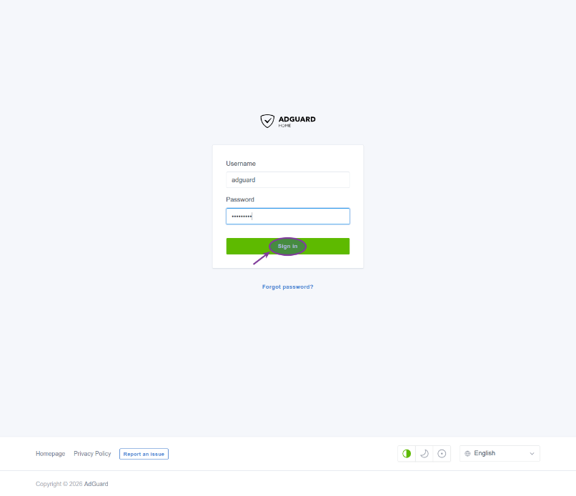Figure.6
-
This will take us to the AdGuard Dashboard as shown in the following illustration:
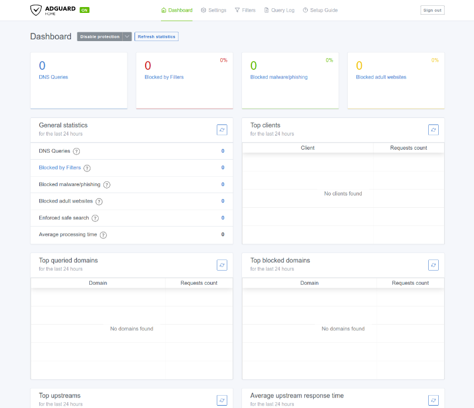Figure.7
-
First click on the Settings option on the top and then pick General settings . This will take us to the General settings page. Ensure Use Safe Search is checked as shown in the following illustration:
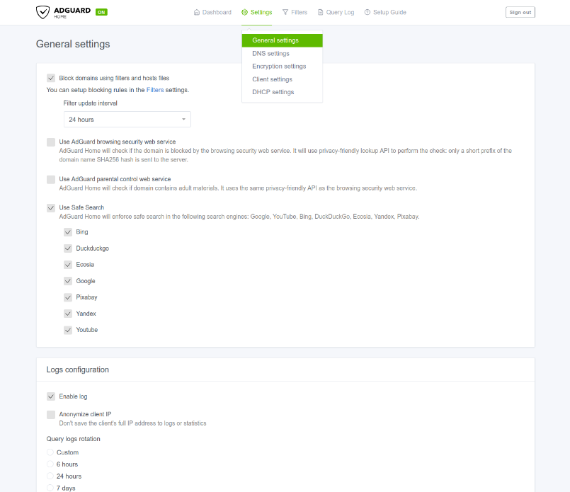Figure.8
-
Next click on the Settings option on the top and then pick Encryption settings . This will take us to the Encryption settings page. Ensure Enable Encryption is checked as shown in the following illustration:
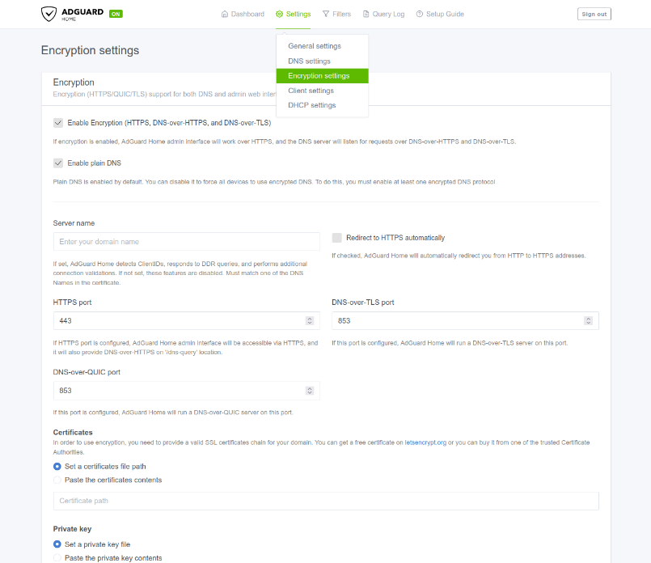Figure.9
-
Again, click on the Settings option on the top and then pick DHCP settings . This will take us to the DHCP settings page. Select the appropriate DHCP Interface as shown in the following illustration:
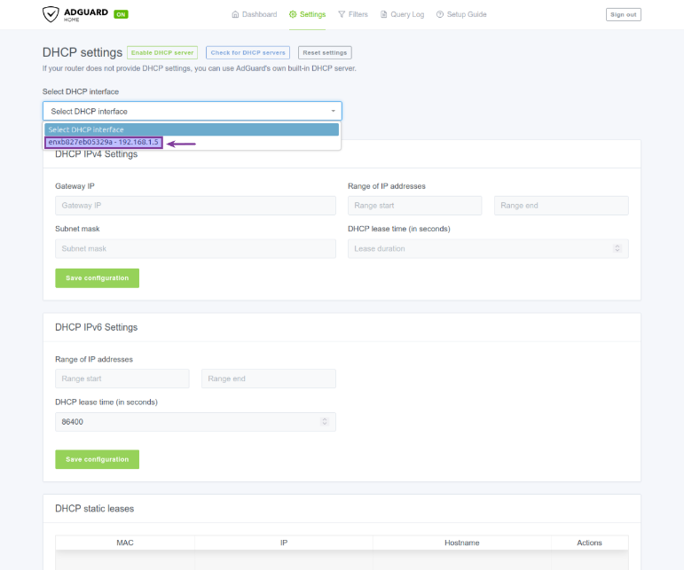Figure.10
-
Choosing the appropriate DHCP interface will pre-populated the DHCP IPv4 Settings. Click on the Save Configuration button as shown in the following illustration:
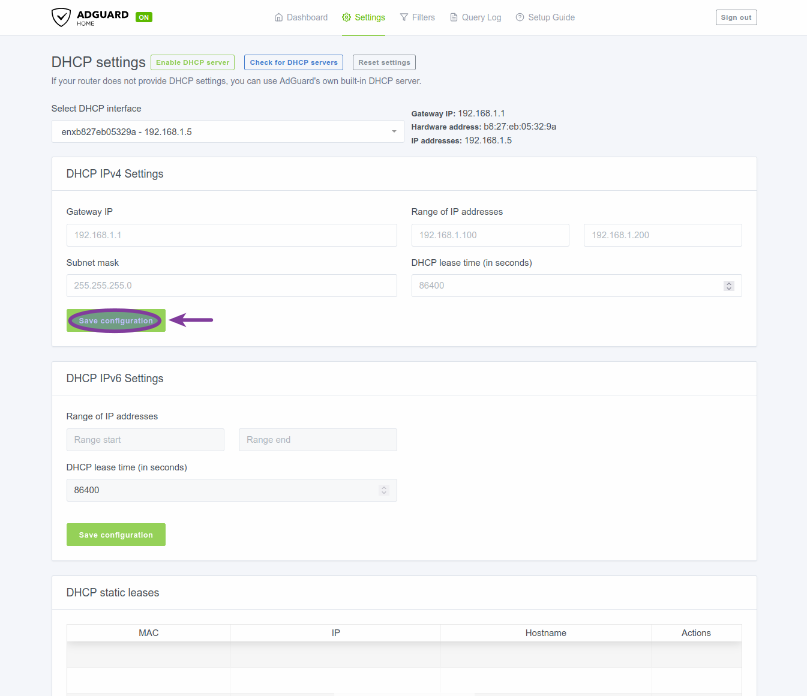Figure.11
-
Login to your Cable Modem router at 192.168.1.1. In our case it was the Verizon FioS Quantum Router. One will need to find the settings for the DNS address(es) and change it to point to the IP address 192.168.1.5. With the Verizon FioS Quantum Router, the settings for DNS address(es) can be located by navigating: My Networks (option at the top) -> Network Connections (option on the left) -> Broadband Connection -> Settings (at the bottom). Change the drop-down option from Obtain IPv4 DNS Addresses Automatically to Use the following IPv4 DNS Addresses. This will ask one to enter two DNS addresses - the first should be 192.168.1.5 and the second can be 1.1.1.1.
The following is the illustration of the DNS setting from the Verizon FioS Quantum Router:
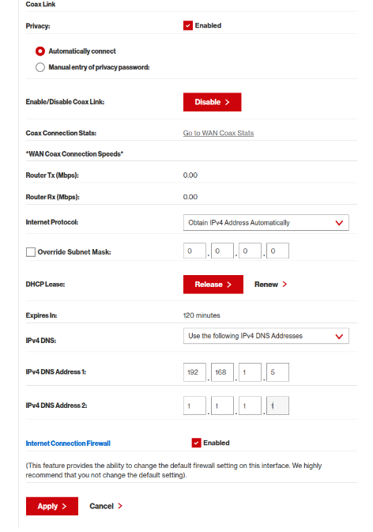Figure.12
Finally, apply the changes to the Cable Modem router.
-
Wait a few seconds and the click on the Dashboard option on the top.
The following illustration shows the current state of the AdGuard Dashboard:
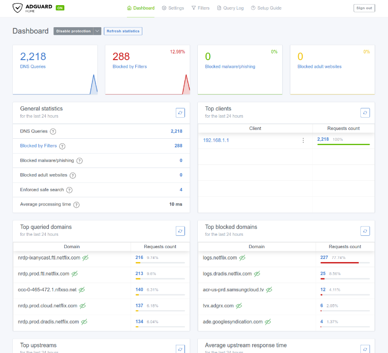Figure.13
It was just AMAZING to see ads and tracking being blocked !!!